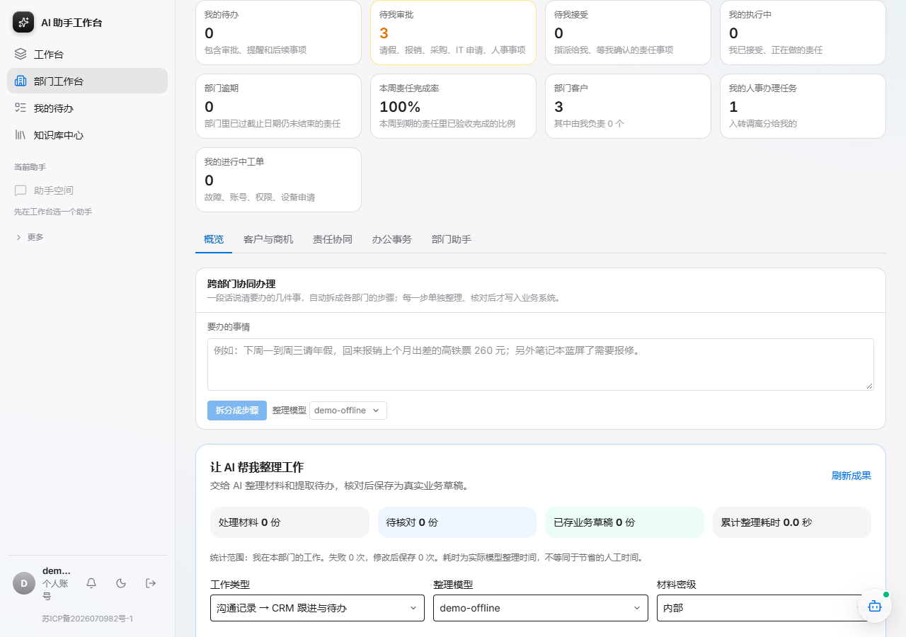
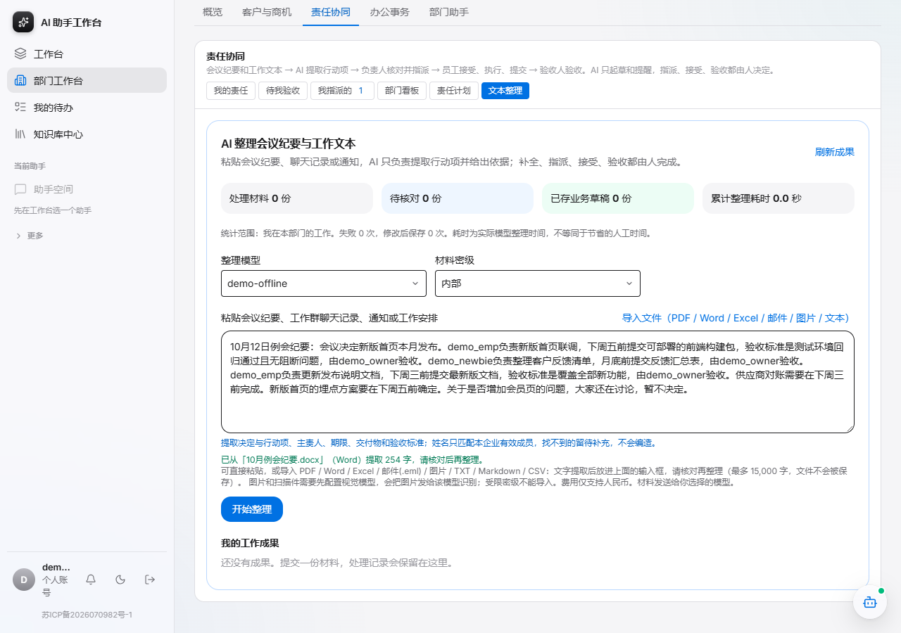
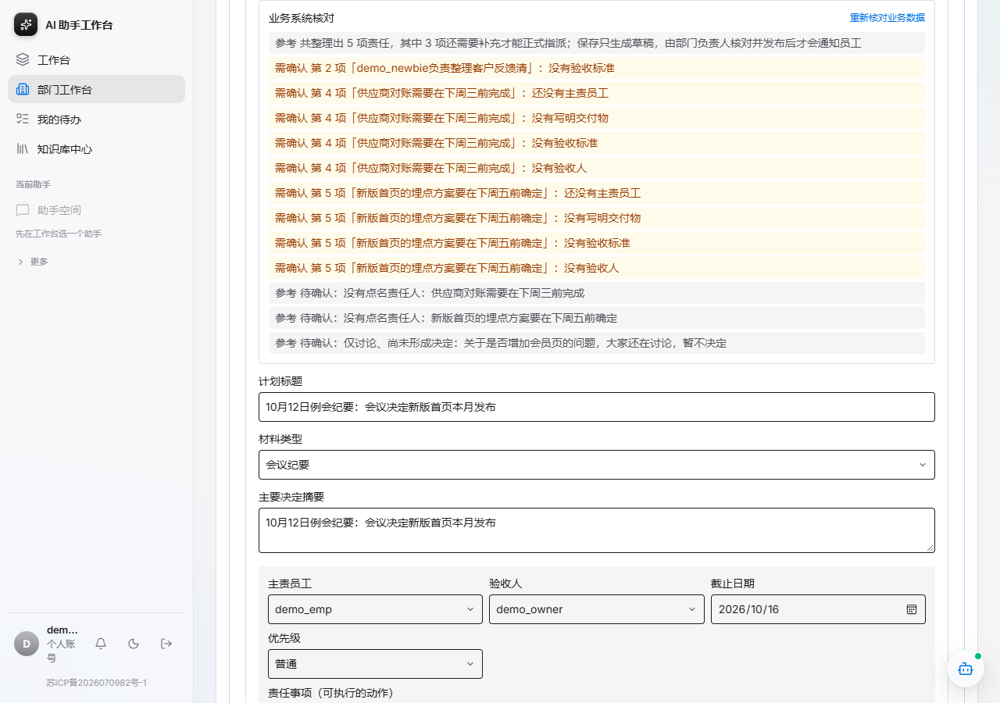
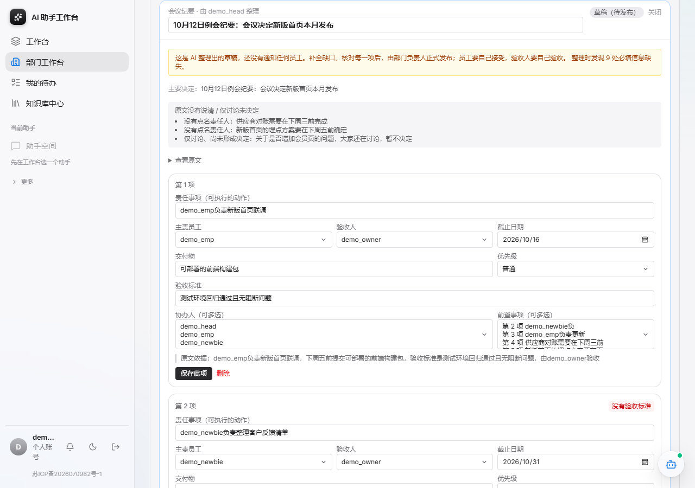
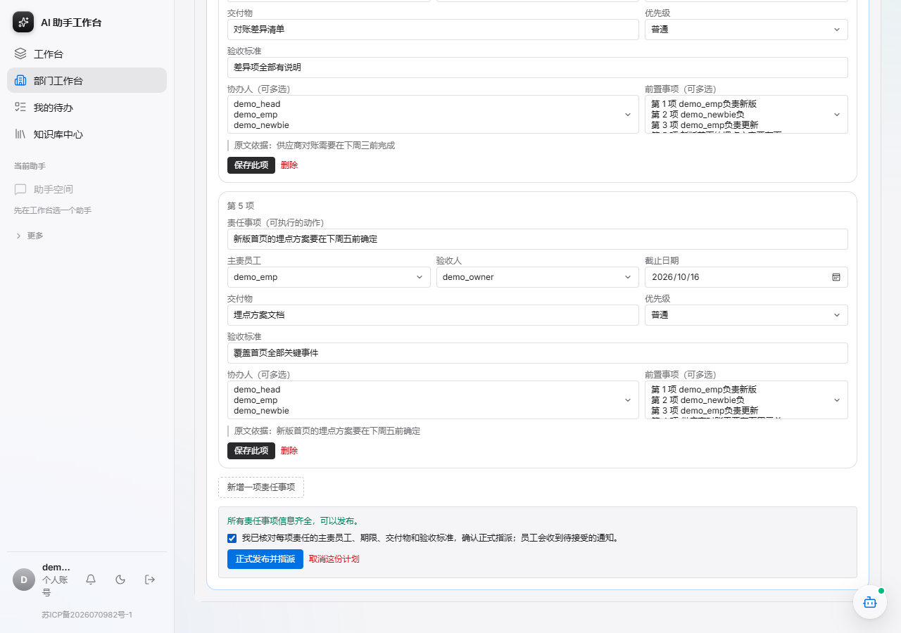
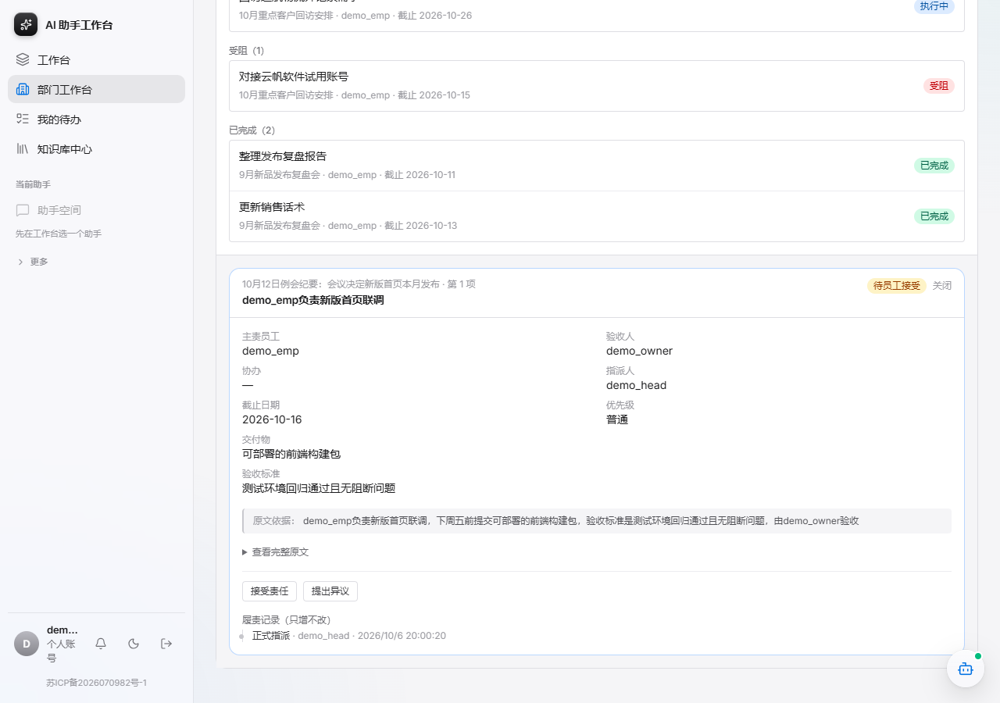
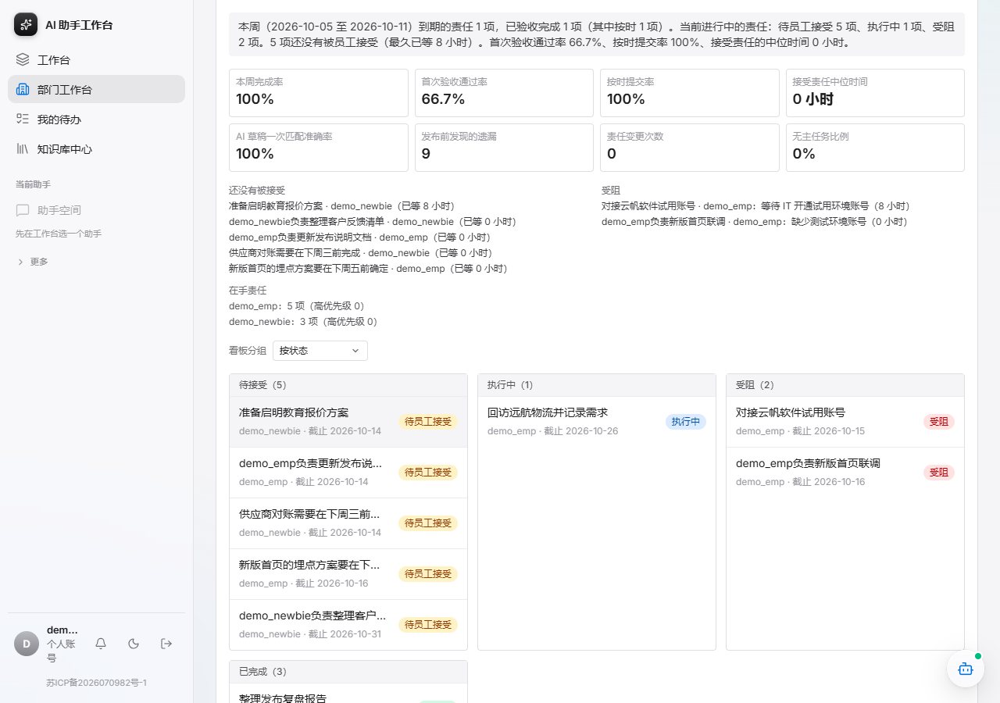
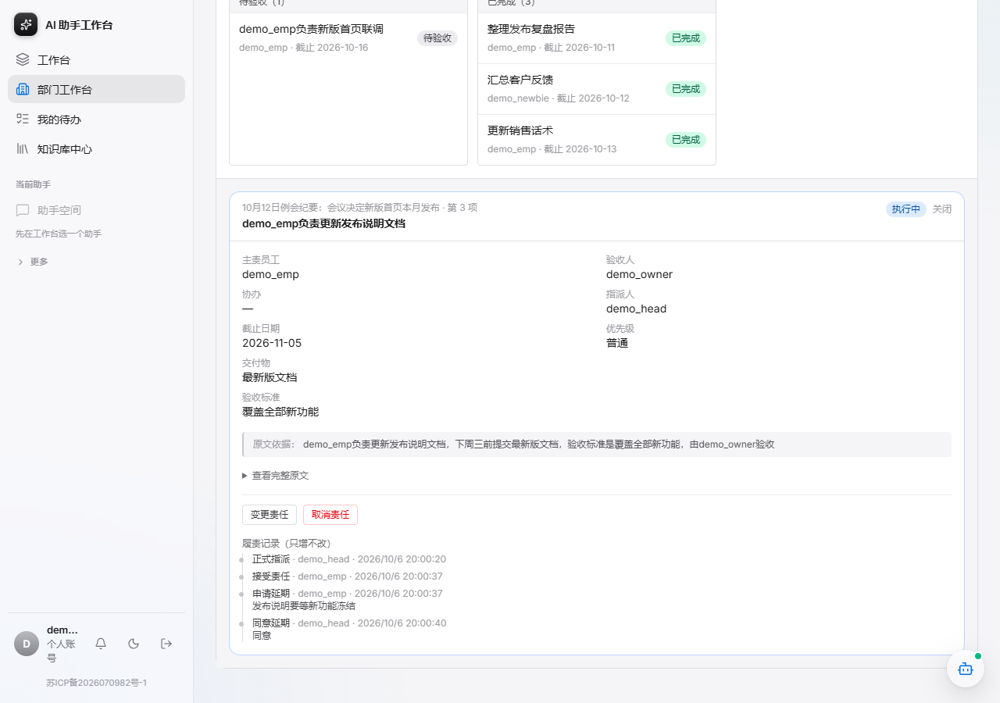
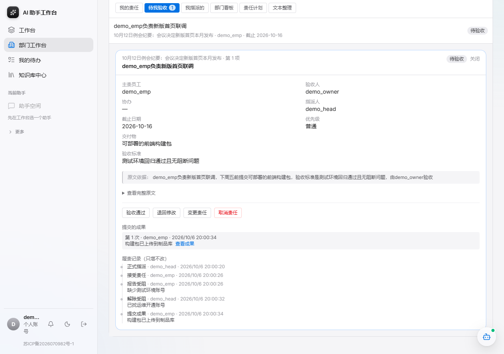
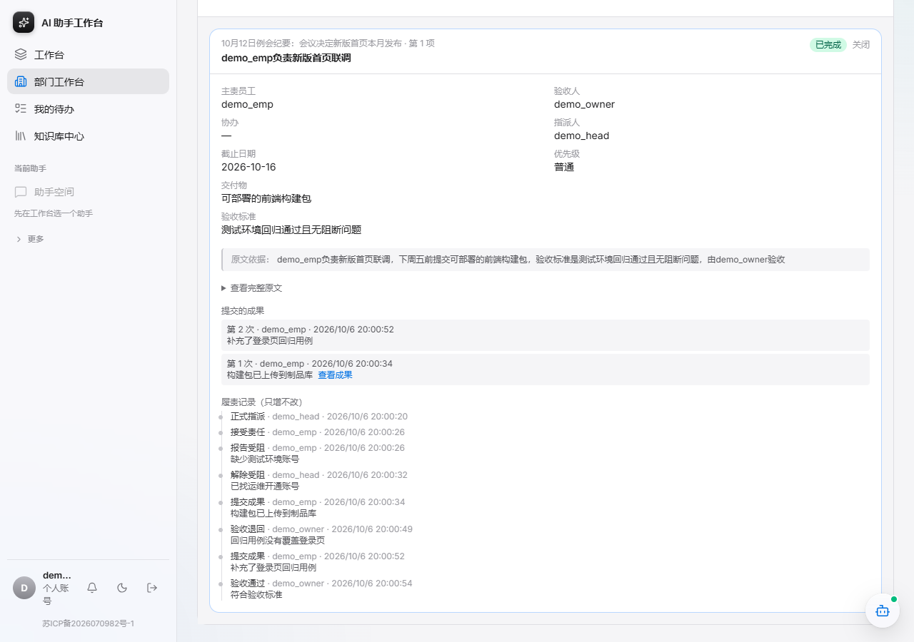

从会议纪要到验收闭环的图文备份。账号和密码见 docs/demo-script.md。
待我接受、我的执行中、部门逾期、本周完成率——按身份显示。

PDF、Word、Excel、邮件、图片都能导入：服务端只提取文字（不保存文件），填进输入框让你核对后再整理；图片和扫描件按密级决定能否交给视觉模型识别。

姓名只匹配本企业有效成员，期限按“今天”换算，原文没写的留空待补充；仅讨论的内容不会变成责任事项。

缺主责员工、验收标准、验收人的责任事项会标红；补全前不能发布，也没有通知任何员工。

发布是负责人的决定：要勾选确认；员工会收到待接受的责任。

接受是员工自己的承诺：指派人和别人都不能替他接受；对期限不合适可以提异议。

周报文字只陈述系统里的事实，不评价员工；指标看闭环质量，不看完成数量。

改期限必须有原因并留下记录；员工不能自己改，也不会被静默改动。

只有指定的验收人能验收，主责人和指派人都不能；可以退回并写明原因。

接受、受阻、解除、提交、退回、验收全部留痕，员工也能看到每次变更。
